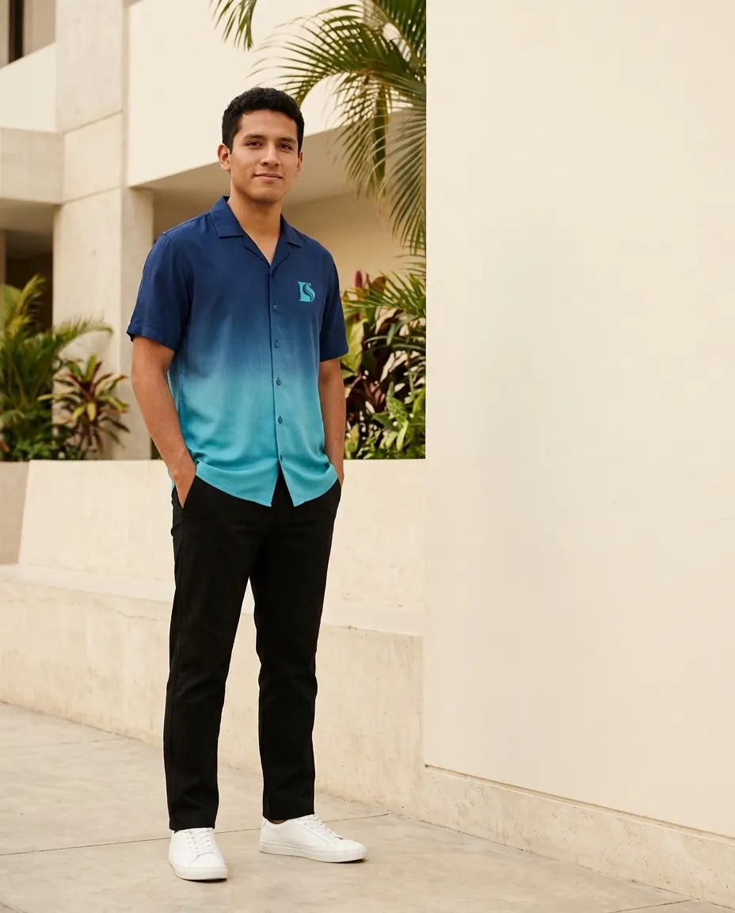

Gabriel · 19–24 años
Joven cristiano, activo en redes y con gusto por lo contemporáneo
Busca vestir prendas cómodas, limpias y actuales que le permitan expresar su fe sin perder estilo.
- Consume contenido en Instagram, TikTok y WhatsApp.
- Prefiere prendas versátiles para estudio, salidas y reuniones.
- Valora mensajes breves, visuales y con identidad.